BAI helps you understand your workload and become more aware of your work-life boundaries. It can support you in communicating and negotiating these boundaries with others, including how and when you are reachable. This guide takes you through the app step by step, from initial setup to everyday use: Controls, then Schedule, Status, Alerts, Mood, and finally Insights.
Each step below has the screen you should be looking at. Follow it in order the first time; after that, dip into whichever section you need.
Read this one first
Everything after this is setup, done once. These five are the ones worth remembering — they are what using BAI looks like most days, once it is running.
The arc on the dashboard is not just a reading. Tap it and BAI opens What to try — concrete ways to communicate, reschedule and protect yourself, for the status you are on right now — and Your move, the one to act on.
Do this any time you are not sure how to negotiate in the moment.
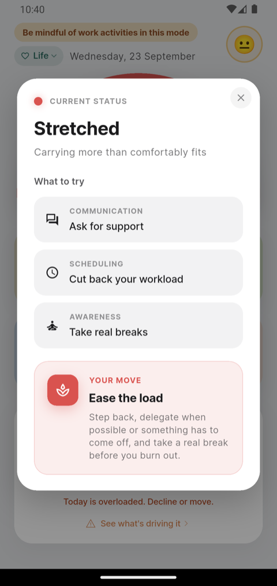
Tap the face and say how you feel. BAI may offer to set your status to match it — accept it, then tap the arc. The advice underneath now speaks to how you actually feel, not only to what your calendar shows.
The mood check-in sets the negotiation; the arc tells you how to run it.
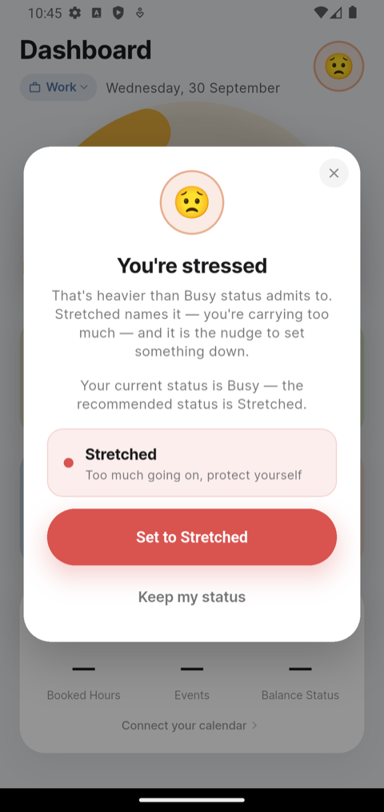
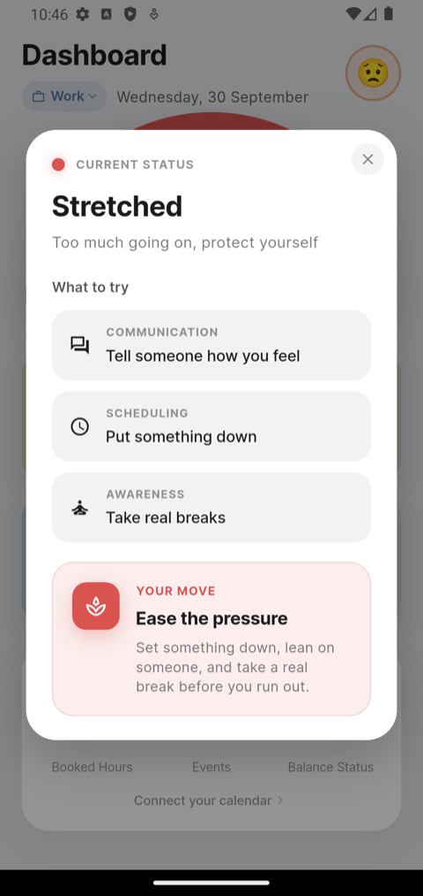
Before you say yes to something weeks out, look the date up on Schedule. Knowing what a week already holds is what tells you what to accept, what to decline, and what to ask to have moved.
This is the negotiation you have with whoever is asking, before you answer them.
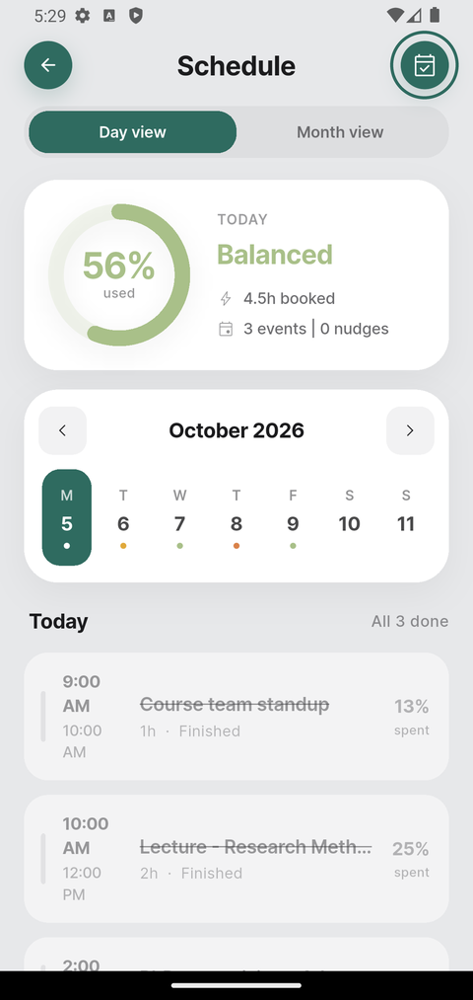
On a day that is genuinely packed, set aside the events that are not really work you are carrying — Don't count this event. That is a negotiation too: with yourself, about what your day actually holds, before you take it to anyone else.
Do this whenever a day reads fuller than it really is.
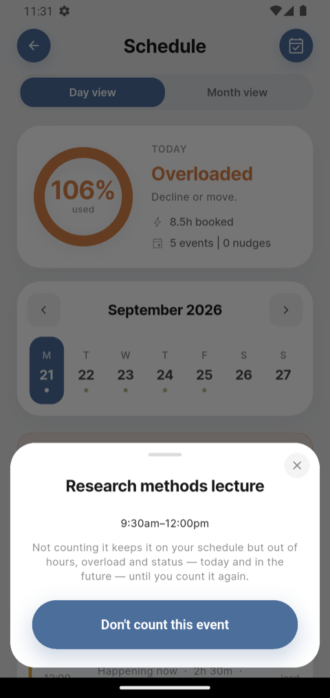
For something you need to get ready for, tap it on Schedule and choose Remind me to prepare: one to five work days before it. For something that repeats, like a weekly lecture, choose Remind me before every one and pick one.
When it is due, BAI tells you: Coming up Thursday 14:00: 'Board presentation' — don't forget to prepare. On the lock screen when you are away, in the app when it is open. Tap Open to see that day.
Set it the moment you agree to something, so the preparation gets a place in your week too. More on reminders to prepare.
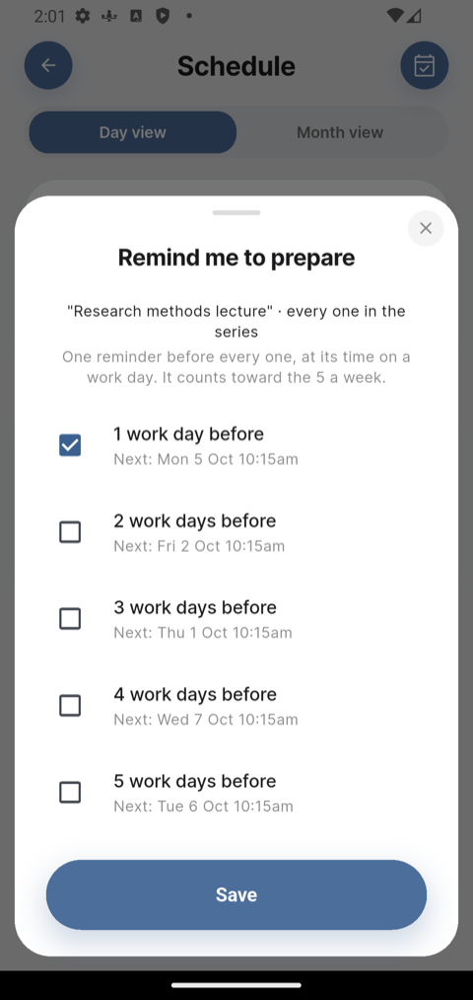
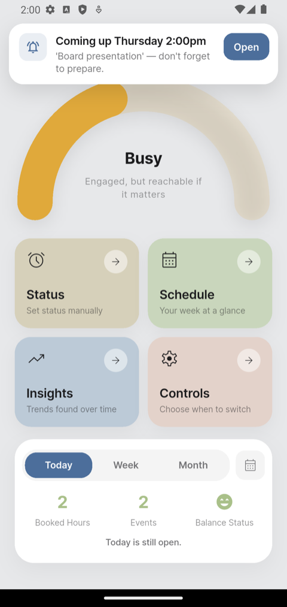
Before you start
This is what opens when you launch BAI, and where the tour begins and ends.
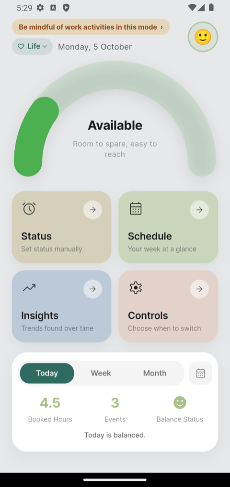
Step 1
Start here. Controls is where you set the working pattern everything else is measured against, and choose what BAI is allowed to read.
From the dashboard, tap Controls. Switch Schedule on to let BAI move you between Work and Life mode by itself.
Tap the day letters to pick your working days — selected days are filled in. Weekends are off by default.
Turn the schedule off on holidays and days off. BAI then leaves your mode alone until you switch it back on.
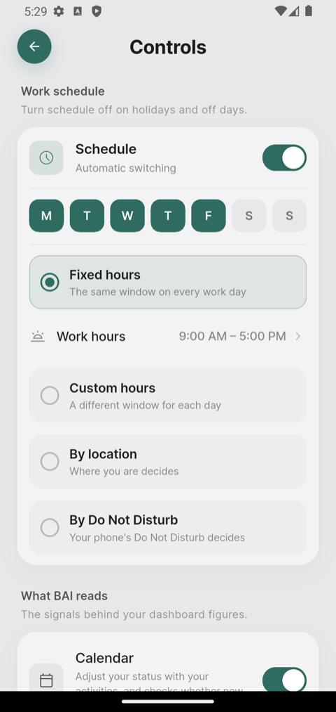
With the schedule off, tap the mode chip on the dashboard and choose Work. Coming from Life mode, BAI asks How long are you working for? — pick 1, 2 or 4 hours, the rest of today, or choose a time of your own.
For anyone who manages Work and Life by hand and sometimes forgets to switch back — set a length once, and BAI remembers for you.
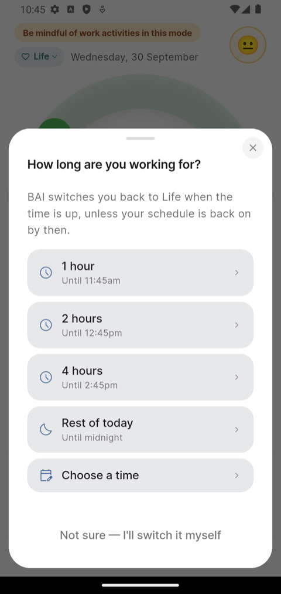
Choosing a length shows a banner straight away, naming the time you will be switched back. When that moment comes, BAI tells you the same way it tells you about anything else: on the lock screen if you are away, in the app if you are not.
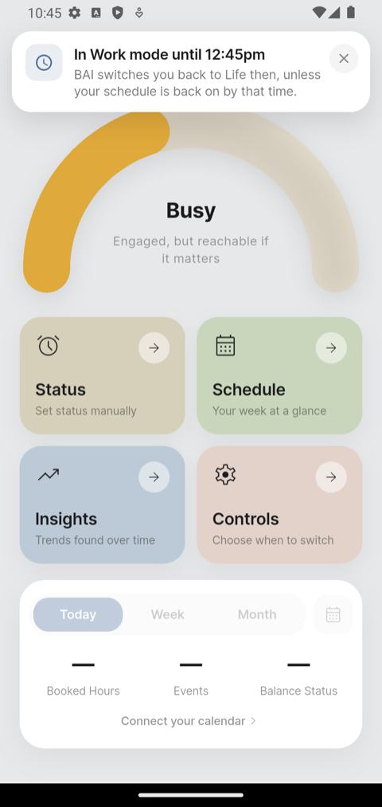
Pick one — BAI uses one way at a time:
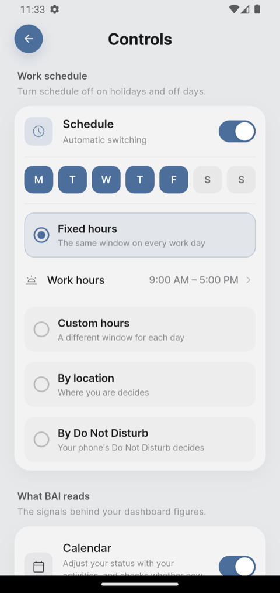
Some days are not one stretch — a morning, then an afternoon, then a shift in the evening. With Custom hours, tap a day and use Add a block for each one, for example 9:00–11:00, 2:00–7:00 and 8:00–11:00 in the evening. Tap Remove this block on any you no longer want.
BAI is in Work mode during every block and in Life mode between them, so a forgotten manual switch does not leave you at work all evening.
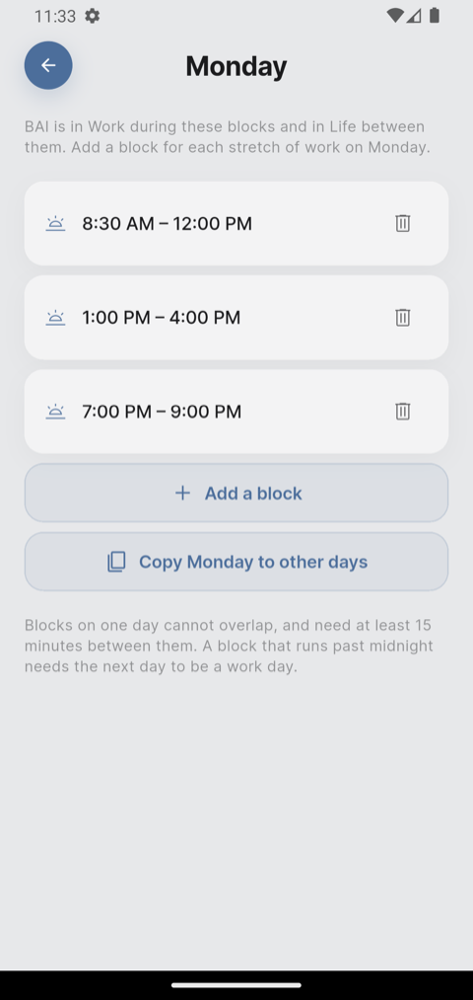
Instead of hours, let your phone decide: switch on a Focus (or Do Not Disturb) and BAI moves you to Work; switch it off and you are back in Life.
On iPhone — By Focus. Set it up once in iOS Settings:
Controls then says Connected. Last heard… the first time it hears one.
Open BAI when you change Focus.
iPhone only tells BAI about a Focus change while the app is open. A change made while BAI is closed is caught up the next time you open it — and your Work and Life time is recorded from then, not from the moment you changed it.
On Android — By Do Not Disturb. One button turns your phone's Do Not Disturb on or off, and the mode follows: Work while it is on, Life while it is off. The first time, Android sends you to a system page to give BAI Do Not Disturb access. The Count Do Not Disturb switch decides whether being on counts as Work at all.
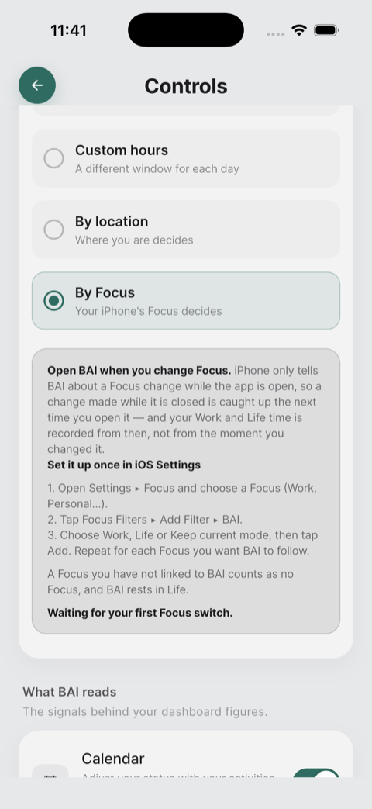
Choose By location, then tap Locations. Add the place that means Work and the one that means Life — your office, home, wherever the switch should happen.
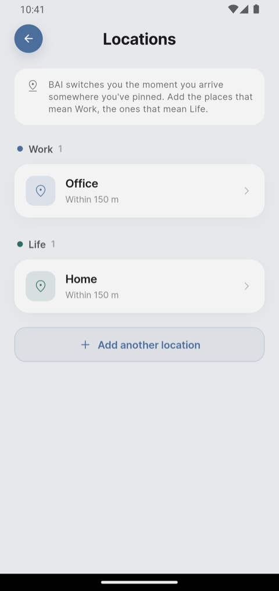
Only add a place while you are standing at it.
Locate me marks exactly where your phone is at that moment — not an address you type in, and not somewhere you are planning to be. Marking your office from home, or the other way round, pins the wrong spot, and BAI will switch you at the wrong place — or never.
BAI confirms with Marked here and how accurate the reading is — a few metres is normal indoors.
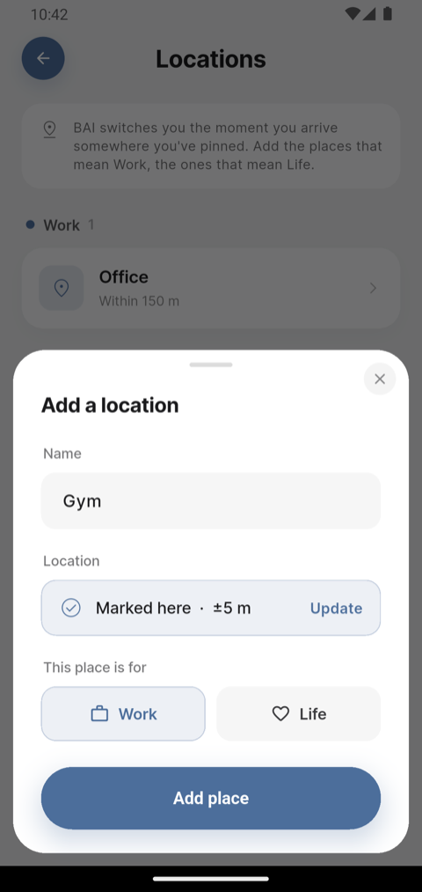
Scroll to What BAI reads and switch Calendar on. Two ways to give BAI a calendar appear beneath it — use either, or both:
BAI only ever reads your calendars. It never adds, edits or deletes anything.
With the switch off, the Schedule and the dashboard say Calendar is off. With it on but no calendar chosen yet, they say No calendar connected. Either one takes you straight here.
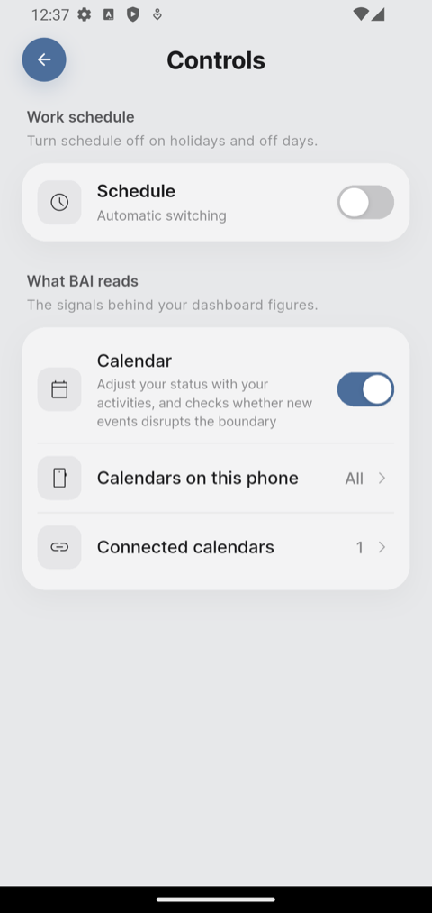
Tap Calendars on this phone. The first time, your phone asks whether BAI may read its calendars — this is the only place it asks.
Every calendar on your phone is listed, grouped by the account it came from. Switch off the ones that are somebody else's — a shared team calendar, a subscribed holiday feed — and their events stop filling your day. To leave the phone's calendars out altogether, turn off Read this phone's calendars at the top.
This matters more than it looks. A shared calendar you cannot control will otherwise make every week read as full.
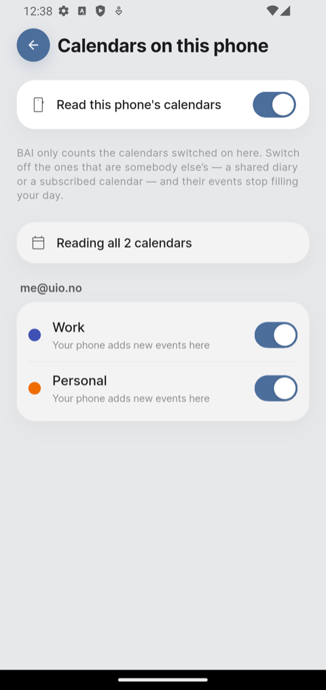
For a calendar that is not on your phone — or one you would rather keep off it — tap Connected calendars, then +. Choose where it lives: Outlook, Google, iCloud, Proton, Fastmail, Zoho, Nextcloud, or Other for anything else.
The link goes straight from your calendar service to your phone, and stays in BAI — it is not added to your phone's Calendar app, and nothing is sent to the study. Anyone holding the link can read that calendar, so keep it to yourself; resetting it in your calendar service disconnects it. For a work calendar, check that your workplace allows sharing it this way.
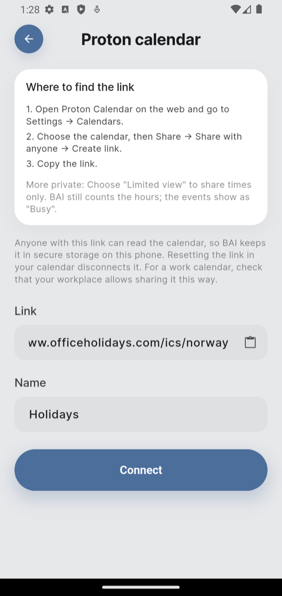
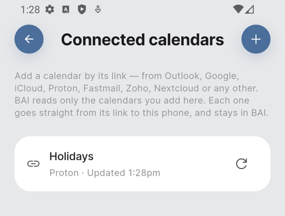
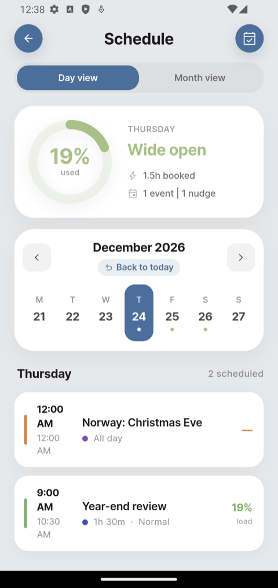
Step 2
With a calendar connected, the Schedule screen turns your calendar into a single reading: how much of today is already spoken for.
Tap Schedule from the dashboard. The ring is the share of your day already booked, and the word beside it is the verdict — Wide open, Still open, Balanced, Filling up or Overloaded.
Underneath it: hours booked, and how many events that is.
The strip under the ring is your week. The coloured dot beneath each date is that day's verdict, so you can see a heavy Thursday coming before you agree to anything else. Tap any date to read it.
Below that, every event on the chosen day, with its share of your capacity. Finished ones are struck through.
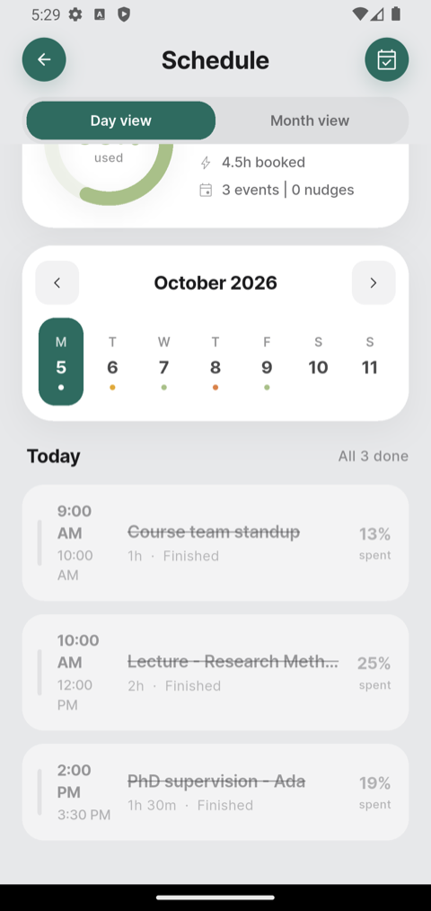
Tap Month view for the whole month at once, each day tinted by how full it is. The key at the bottom explains the colours.
Useful when someone asks for a date three weeks out and you want to know what that week already looks like.
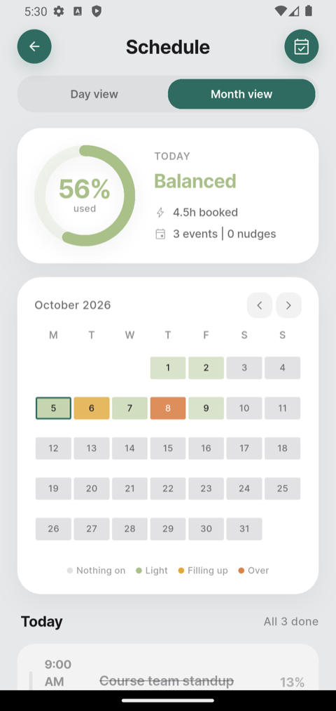
The calendar button in the top-right corner answers a different question from the rest of the screen: not "how is today going?" but "am I free then?"
Tap it and pick a date. Tap a second date to make it a range — a conference week, a fortnight you are thinking of taking on. Tapping again starts over, so there is nothing to undo. Then tap See availability.
BAI answers in a sentence — You're open, There is room, You're nearly full, You're full, or Some days are full when the average looks fine but individual days do not — with the figures underneath it.
This is the one to reach for when somebody asks you to commit to a date, which is exactly when the diary is hardest to hold in your head.
The week strip and the month view both let you go back to earlier days. On a day that has already gone, BAI describes it in the past tense — that day was overloaded, nothing was scheduled — and stops giving advice about it, because there is nothing left to move.
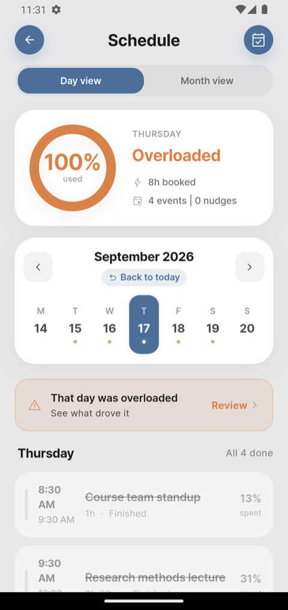
Not everything in your calendar is work you are carrying — a private appointment, a reminder-style entry, something you are not really attending. Tap the event on the Schedule and choose Don't count this event. For an event that repeats you can also choose Don't count any in this series.
When you add a long event — two and a half hours or more — the Schedule shows a strip: 1 new event in your calendar. Tap it to see each one highlighted, not judged:
BAI does not guess what an event is or tell you how long it should take. You know what you booked; this is only so nothing lands unnoticed.
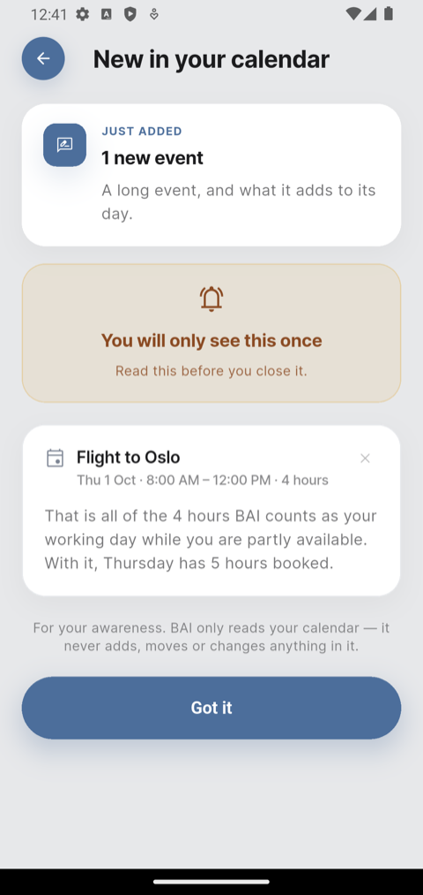
For an event you need to get ready for — a presentation, an exam, a hard conversation — tap it on the Schedule and choose Remind me to prepare. Tick any of 1 to 5 work days before; each line shows exactly when it will come.
If BAI is open when a reminder is due, it tells you in the app instead of on the lock screen.
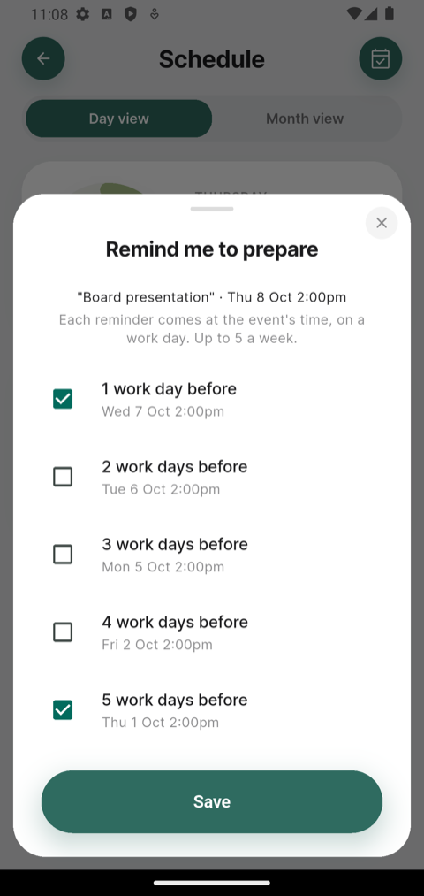
Assumptions that are worth saying plainly about what BAI charges to your day.
So a week of invitations you will probably turn down reads as full, and a week at an all-day conference reads as open. If the ring ever looks wrong, this is usually why.
Step 3
Your current status is the boundary negotiation practice you must follow in the moment/time/period.
Tap on the arc to see more details.
Most of the time the schedule sets it for you; but you can also control this manually or via your mood.
Tap Status on the dashboard and choose one of six:
Tap Continue to confirm — or slide your finger round the arc at the top; it stops on each status, Partly available included.
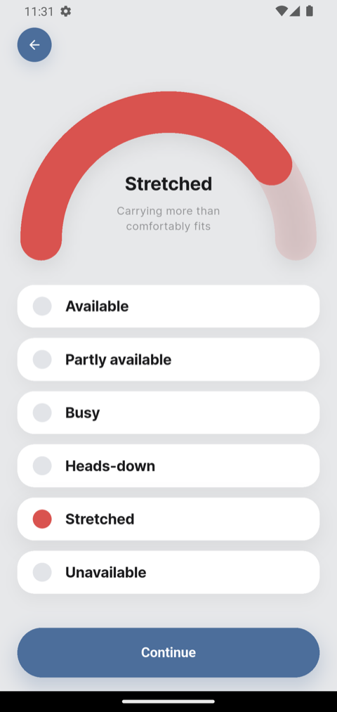
For someone working, say, half time, four hours a day, or two days a week — an arrangement agreed with an employer, for health or another reason. It is not about how full your calendar is; it is a standing agreement about how much you are available.
Only you can set it — on the Status page. Your mood never sets it, and neither does an event in your calendar.
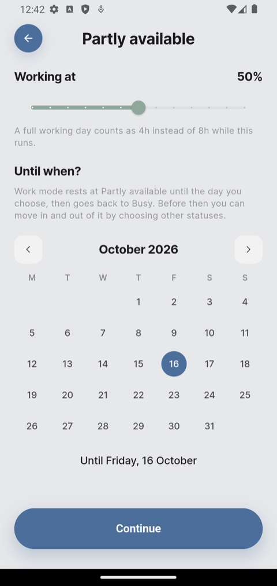
Available, Busy and Heads-down move with your day. Stretched and Unavailable are different: no meeting or calendar event changes them.
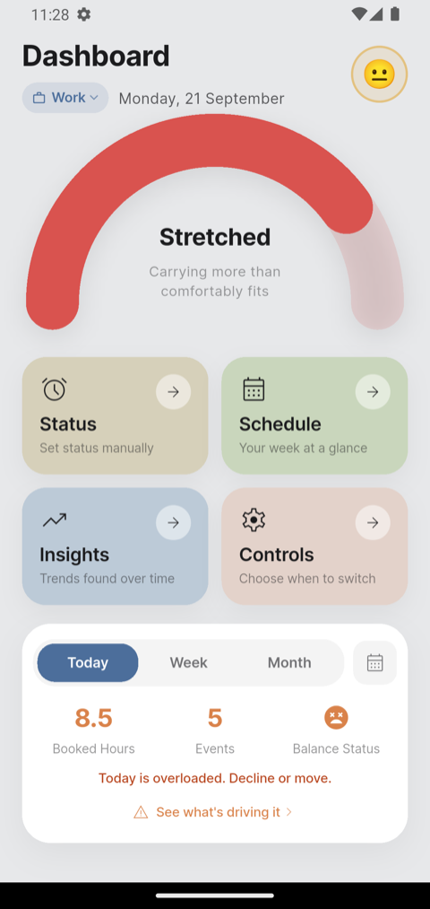
Step 4
BAI tells you three kinds of thing: when it switches your mode, when a day is overloaded, and the occasional reminder that a setting needs a look.
You are told once: on the lock screen if you are away, in the app if you are in it.
Never both. If your phone's notifications are switched off, BAI tells you in the app instead. If the Control Centre or a call is laid over the app, BAI still counts you as being in it.
When a day is booked past what it holds, BAI tells you — by default at 7:00 in the morning, or as soon as a new event pushes today over the line. Tap the alert (or a Now Stretched alert), or the See what's driving it link on the dashboard or the banner on the Schedule, to open the capacity page. You are told once per day: if the 7:00 alert has spoken, BAI does not send Now Stretched for the same day as well.
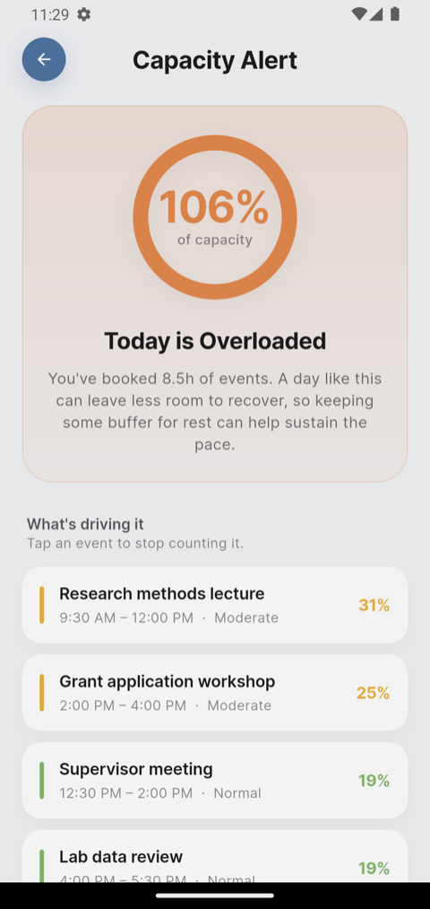
Tap an event in the list to stop counting it — the same choice as on the Schedule. The ring moves the moment you do.
Looking at a day that has already passed? The page reads Wednesday was overloaded, calls the list What drove it, and offers no advice.
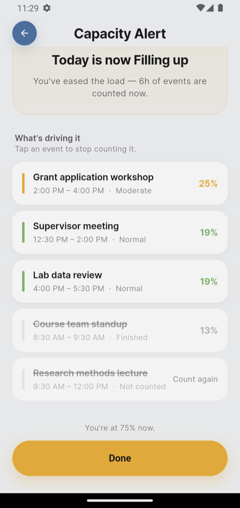
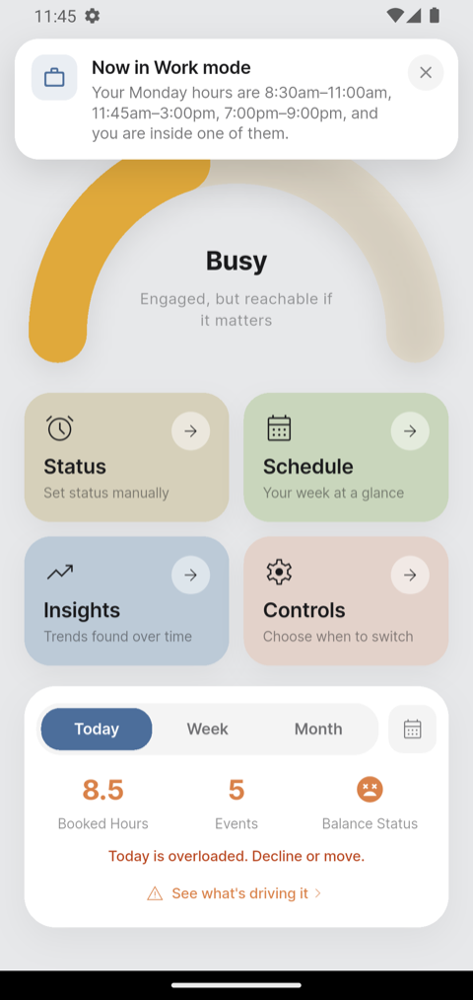
Step 5
Status is what your calendar says. Mood is what you say. The gap between the two is what the study is looking at, so this is the one thing worth doing daily.
Tap the face in the top-right corner of the dashboard. Pick the point on the scale that fits, from Energized at the top to Burned out at the bottom, then tap Set Mood.
The line under the scale describes whichever one you have picked, so you can check it means what you think.
Gone quiet? After five work days without a check-in — two if your calendar is off or none is connected — BAI reminds you once on the lock screen, then in the app each day until you check in. It never asks on a day off, or while your schedule is off. New
If none of the ten fits, tap Add your own at the foot of the scale. Name it, write one short line describing it, and place it on the scale — 1 is your most available, 10 your least. It joins the list and stays there.
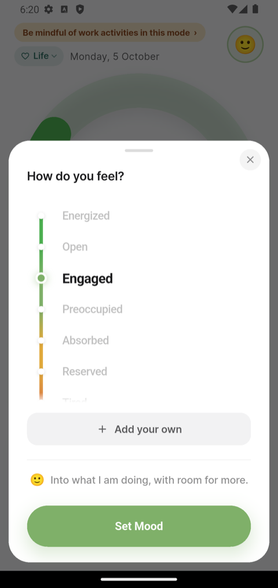
A mood that pulls away from your current status brings up a second sheet — here, Stressed against a status of only Busy — naming what it would change your status to and why. Set to … accepts it; Keep my status leaves it as it is. Either way, the mood itself is recorded.
Accept it and tap the arc on the dashboard: the negotiation advice you get now speaks to how you actually feel — see Daily use, step 2.
Step 6
Insights is the only screen that looks backwards. It needs a few days of use before it says anything; until then it tells you so rather than guessing.
Tap Insights from the dashboard. The first panel is a bar a day: taller means more guarded. The dots along it are your mood check-ins, so you can see the two move together — or not.
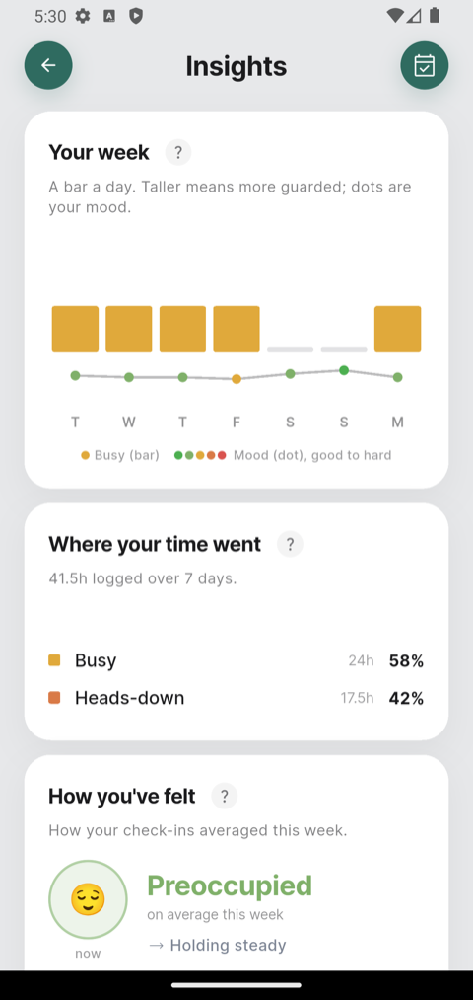
Where your time went splits your logged hours by status, so you can see how much of the week you spent holding people off.
How you've felt sums up your check-ins in words, not numbers: your week's average as a mood — Tired, Focused, Stressed — with a sentence about what that means, and each mode's average as a word too. If Life is reading heavier than Work, it says so, which is exactly the kind of thing worth noticing. New
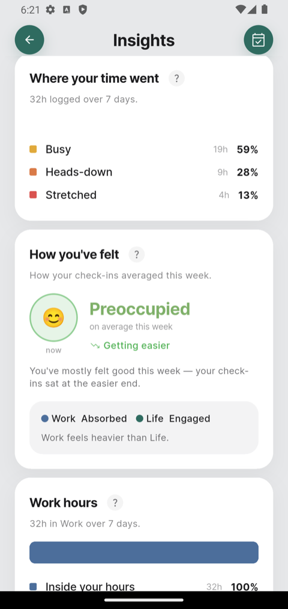
Work hours compares the time you actually spent in Work mode against the hours you told BAI you work — and how much of it landed outside them.
This is the boundary, measured. Hours outside your own window are the number to watch.
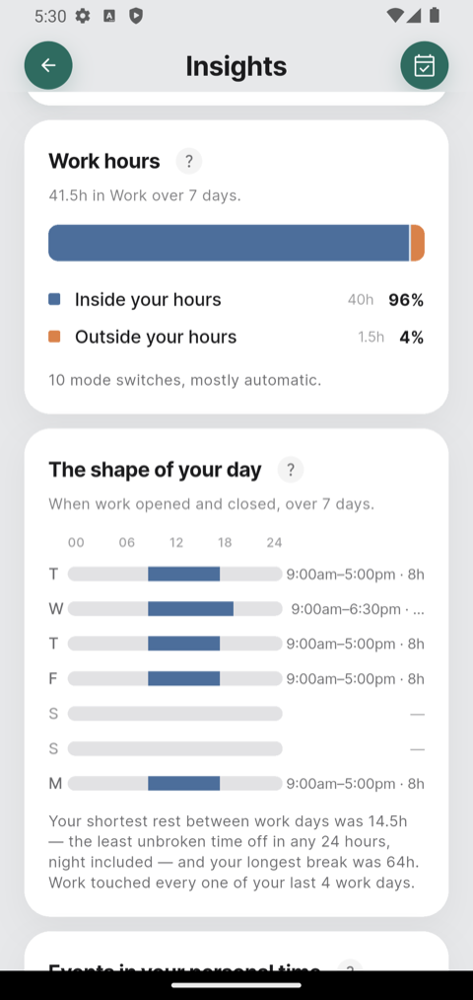
A bar per day showing when work opened and closed. Underneath it, your shortest rest between working days and your longest unbroken break.
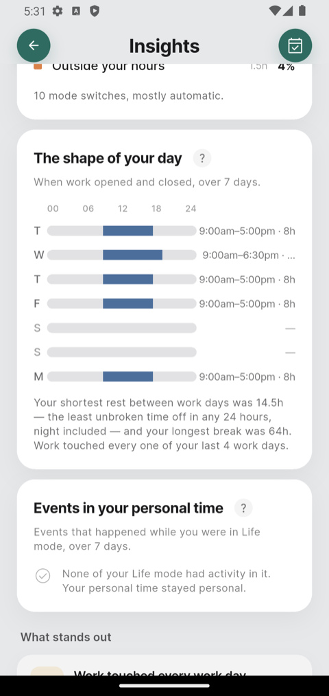
The last panel is written in sentences: patterns BAI has noticed across the period, such as work touching every working day, or less room as the week goes on.
Once there have been three overloaded days in four weeks, it also says what happened on them — whether you kept Stretched or changed it, by hand or after a check-in — and whether those days felt heavier than the rest. New
These are observations, not instructions. They are there to be recognised or dismissed.
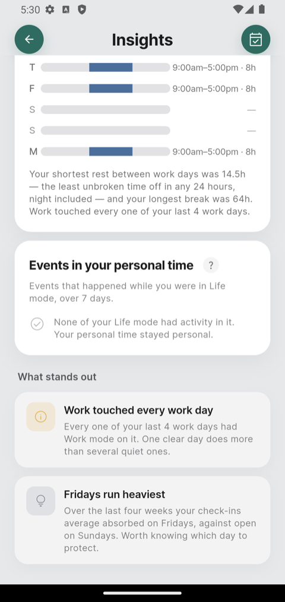
Insights has its own calendar button, the mirror image of the Schedule's: it only lets you pick days that have already happened, and asks how did it go? rather than am I free? Pick a day or a range and tap See how it went. BAI answers in the past tense — You were full, There was room — with the figures beneath.
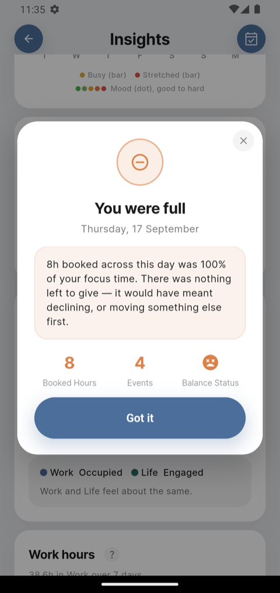
While Partly available runs, the first panel is Your arrangement: the hours you booked against the hours you agreed, with a bar that turns orange past them.
It shows in Work and Life while the arrangement runs, and goes when it ends.
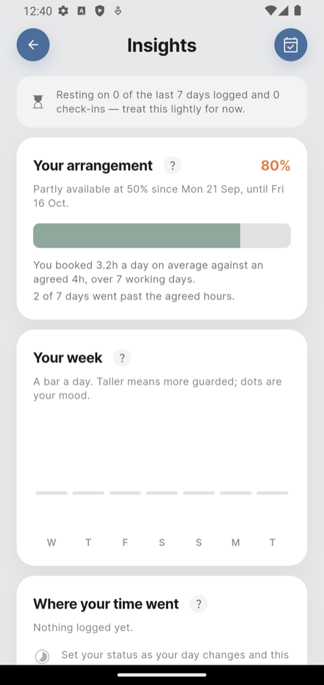
In short
Once it is set up, BAI asks very little of you: